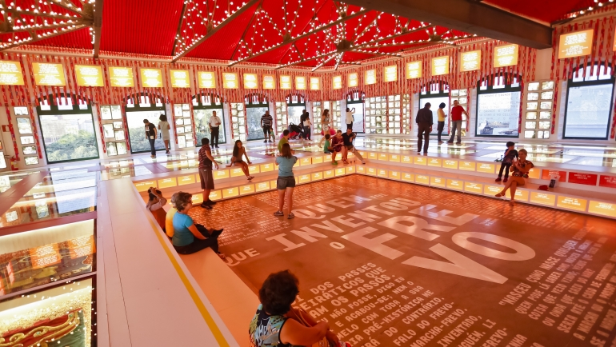

Paço do Frevo
Instalado no Bairro do Recife, o Paço do Frevo é um Centro de Referência em Salvaguarda do Frevo dedicado à difusão, pesquisa, lazer e formação nas áreas da dança e música do frevo. Seu objetivo é proteger, divulgar e propagar a prática do frevo para as futuras gerações e ser uma espaço de promoção e celebração da cultura carnavalesca e do frevo durante o ano todo. Desde 2014, o Paço desenvolve exposições, atividades, pesquisas e eventos para a divulgação e proteção desse Patrimônio Imaterial da Humanidade, que deve ser reverenciado todos os dias. O Paço do Frevo é um centro cultural de referência que desenvolve ações, projetos e atividades visando a valorização, documentação, proteção, transmissão e salvaguarda do Frevo, o ritmo / dança musical que é um dos principais ícones da identidade pernambucana, tendo sido reconhecido por o Instituto do Patrimônio Histórico e Artístico Nacional (IPHAN) como patrimônio cultural e imaterial brasileiro em 2007 e pela UNESCO como Patrimônio Imaterial da Humanidade em 2012.
Localização
Localizado na: Praça do Arsenal da Marinha, s.n°, Bairro do Recife, Recife/PE
Fotos do Paço do Frevo
